<mat-toolbar
  color="primary"
  class="toolbar mat-elevation-z8"

  >
  

  <span class="fill-navbar"></span>

  <a [routerLinkActive]="['active']" [routerLink]="['/']" mat-button>Início</a>
  <a [routerLinkActive]="['active']" [routerLink]="['/client']" mat-button>Clientes</a>
  <a [routerLinkActive]="['active']" [routerLink]="['/equipment']" mat-button>Equipamentos</a>
</mat-toolbar>
